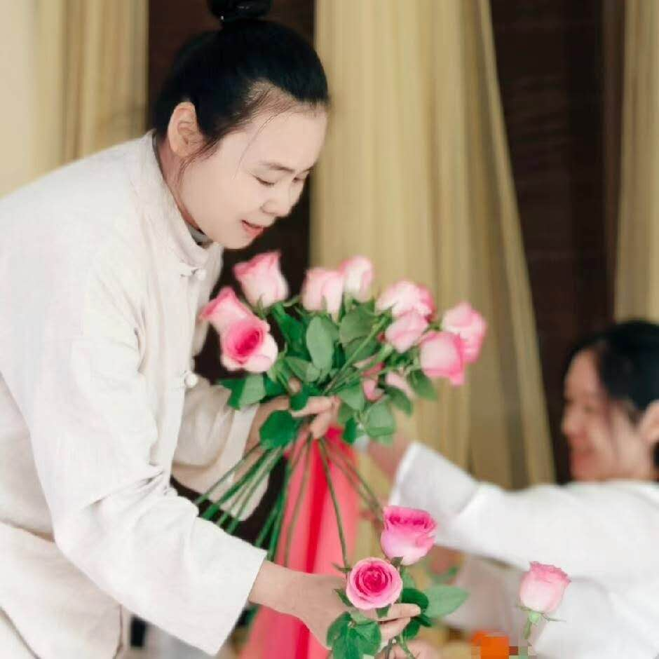
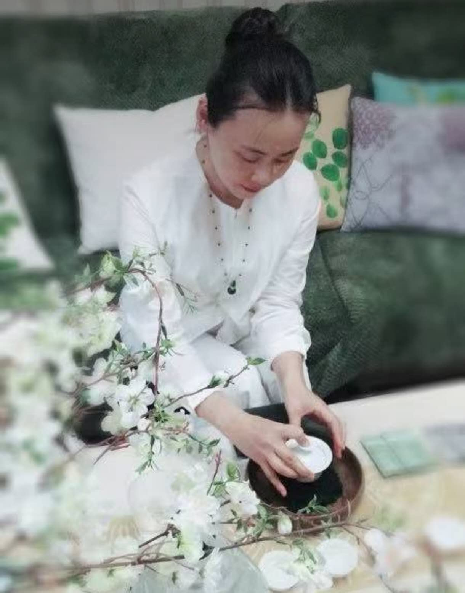

邹朝霞
Zhaoxia Zou

人物 · 邹朝霞
邹朝霞，出身中医家庭，自幼受到父亲行医 经历与家学环境的熏陶，长期关注传统中医 针技术的研究与传承。
现任 Goldisle Light Org 中医九针研究院院长， 从事中医针技术研究及传统针文化传播。
在整理历史文献、研究地方民间用针经验的 过程中，她逐渐将研究方向集中于头面部 美容施针，并探索形成个人针法体系。
中医九针研究院 · 院长
Biography
Zhaoxia Zou comes from a family with a background in traditional Chinese medicine. Her father's medical practice and her family environment shaped her early interest in Chinese acupuncture.
She currently serves as Director of the Institute for Research on the Nine Needles of Traditional Chinese Medicine at Goldisle Light Org.
Her work focuses on traditional needling techniques, historical research, and the preservation and communication of acupuncture culture.
Through the study of historical sources and local needling traditions, she has developed a particular interest in cosmetic acupuncture of the face and head.
Director, Institute for Research on the Nine Needles of Traditional Chinese Medicine
家学 · 源流
邹朝霞的中医研究始于家庭熏陶。 其父邹德（姓名暂记，待核实）从事中医实践， 家庭中的医学传统和生活经历， 为她日后的学习与研究提供了启蒙。
在继承家学的同时，她亦关注地方民间医药 经验及传统医学文献，尝试通过资料整理、 比较研究和个人实践，探索传统针法的 当代表达。
她所关注的历史线索之一，是与北亳地区 相关的地方传统及民间针法。
Family Heritage
Zhaoxia Zou's interest in traditional Chinese medicine began in her family environment. Her father, provisionally recorded as Zou De, practised traditional Chinese medicine. His name remains subject to confirmation.
Alongside her family heritage, she has studied local medical traditions and historical materials, seeking to understand and develop traditional acupuncture practices through research and personal exploration.
One area of particular interest is the local needling tradition associated with the historical region of Bei Bo, or Northern Bo.
针法 · 研究
邹氏中医美容针法
邹氏中医美容针法，是邹朝霞在研究整理 历史资料及地方民间用针经验的基础上， 经个人探索与实践，逐步形成的针法。
相关研究涉及北亳传统文化。当地民间有 古老用针技艺源自商代的传说，但其具体 历史传承关系仍需要进一步的文献和 考古证据支持。
在方法理念上，强调辨证与个体差异， 重视因人、因时、因地的具体条件， 不拘泥于单一固定施针模式。
Acupuncture Research
Zou's Traditional Chinese Medicine Cosmetic Acupuncture
Zou's Cosmetic Acupuncture is an individual approach developed by Zhaoxia Zou through the study of historical materials, local needling practices, and her own research and practical exploration.
Her research includes traditions associated with Northern Bo (Bei Bo). Local oral accounts suggest that certain needling practices originated in the Shang dynasty, but a continuous historical lineage has not been established by available documentary or archaeological evidence.
Her approach emphasises traditional differentiation, individual circumstances, timing, and environmental conditions, rather than a single fixed needling method.
针法研究重视阴阳辨证与灵活施针。 目前主要集中于头面部美容施针领域。 全身其他部位的系统性应用仍处于 进一步研究与探索阶段。
本档案主要记录针法的研究背景、 文化源流与方法理念，不公开具体 施针操作程序。
Her research draws on traditional yin–yang differentiation and flexible approaches to needling.
Current work focuses primarily on cosmetic acupuncture of the face and head. Systematic applications to other parts of the body remain subjects of further study.
This archive documents the historical background, research development, and guiding concepts of her approach. It does not provide procedural acupuncture instructions.

联系 · 交流
欢迎就中医针技术、传统针文化、 历史文献及相关研究进行交流。
Contact & Correspondence
Correspondence concerning traditional Chinese acupuncture, historical sources, needling techniques, and cultural research is welcome.
英国 · 伦敦 · 格林威治 Greenwich, London, United Kingdom
中国 · 山东省菏泽市 · 牡丹区 Mudan District, Heze, Shandong, China